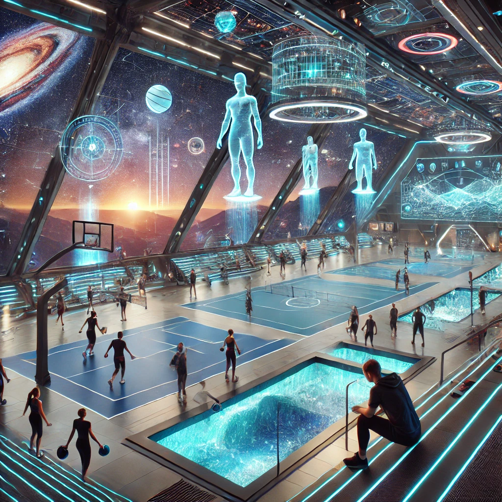

ZOO
Le zoo abrite 100 espèces fascinantes, dont certaines extrêmement rares et en danger critique d'extinction. Ce lieu unique vous permet d'observer ces merveilles dans des environnements méticuleusement recréés pour refléter leur habitat naturel, des jungles luxuriantes aux plaines arides en passant par des écosystèmes aquatiques. Vous pourrez assister à des séances d'interaction éducative avec des experts en biodiversité et même participer à des programmes de parrainage pour soutenir les efforts de conservation. Le principal objectif du zoo est de favoriser la reproduction des espèces afin de les réintroduire dans leurs milieux sauvages, tout en sensibilisant les visiteurs à l'importance de préserver notre patrimoine naturel interplanétaire.
L'Entrée dès 17 euros.
Sport
Le NEBULO est équipé d'un complexe sportif ultramoderne qui satisfera les amateurs comme les professionnels. Parmi les infrastructures disponibles, vous trouverez une salle de sport high-tech avec des équipements connectés, des terrains de tennis, de basketball et de football en gravité modulable, ainsi qu'une piste de course panoramique avec vue sur l'espace. Pour les passionnés de sports aquatiques, une piscine à vagues artificielles et un espace de plongée simulée sont également disponibles. Le pass sportif, accessible pour 130 euros seulement, vous donne un accès illimité à toutes les infrastructures, ainsi qu'à des cours animés par des coachs certifiés, pour une expérience sportive hors du commun.

Commerces
Le NEBULO abrite une galerie commerciale exceptionnelle, véritable paradis pour les amateurs de shopping et de gastronomie. Sur une allée de plusieurs kilomètres, vous découvrirez des boutiques interstellaires offrant des produits uniques, des vêtements de créateurs aux gadgets technologiques. Chaque boutique reflète le charme et la culture des sept planètes du système, permettant aux visiteurs d'explorer des produits artisanaux, des bijoux rares ou encore des souvenirs exclusifs. Les restaurants typiques situés dans la galerie proposent des plats inspirés des cuisines intergalactiques, préparés avec des ingrédients provenant directement des planètes visitées, pour une expérience culinaire cosmique.

Restorants
Les restaurants du NEBULO ne sont pas seulement des lieux de restauration, mais de véritables expériences immersives. Du restaurant gastronomique étoilé servant des menus orchestrés par des chefs de renom, à l'espace buffet offrant une variété infinie de saveurs galactiques, chaque repas devient un voyage pour vos papilles. Pour les amateurs de concepts originaux, le SkyDine propose de dîner en apesanteur, tandis que le Lounge Stellar permet d'apprécier des cocktails moléculaires tout en admirant la vue imprenable sur les nébuleuses environnantes. Des options végétariennes, véganes et sans allergènes sont également disponibles pour répondre à tous les besoins.
Restaurant dès 8 euros.
Cabines d'observations
Les cabines d'observation du NEBULO sont un véritable point culminant de l'expérience. Équipées de baies vitrées panoramiques, elles offrent une vue spectaculaire à 360° sur l'immensité de l'espace et les planètes traversées. Grâce à des télescopes numériques intégrés, vous pourrez observer les moindres détails des constellations et des phénomènes cosmiques en temps réel. Pour une immersion totale, chaque cabine dispose également d'un simulateur d'environnement sonore, permettant de recréer l'ambiance des lieux observés. Les sessions d'observation sont souvent accompagnées de commentaires d'astronomes à bord, pour une expérience à la fois contemplative et enrichissante.
A partir de 20 euros la séance.